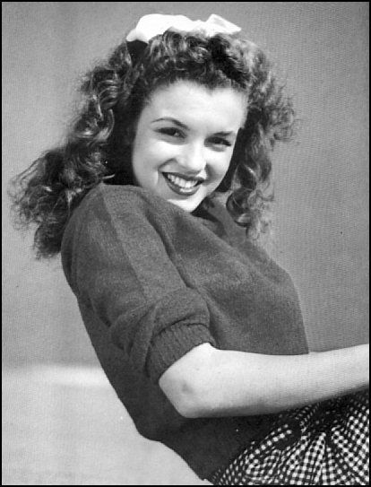
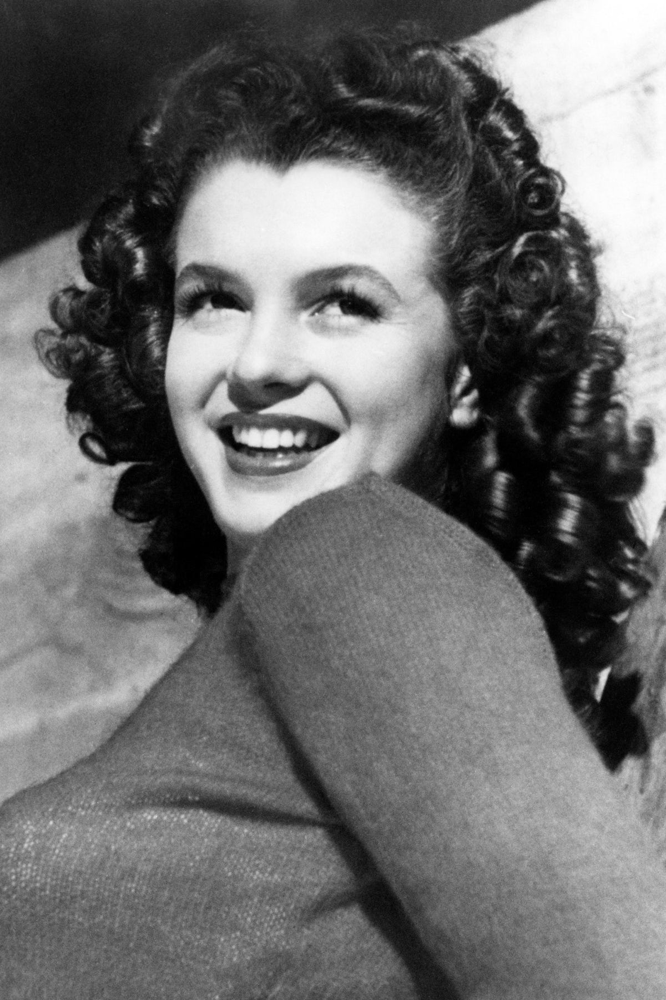

Monroe was born Norma Jeane Mortenson at the Los Angeles County Hospital on June 1, 1926. Her mother, Gladys Pearl Baker (née Monroe, 1902–1984), was from a poor Midwestern family who had migrated to California at the turn of the century. At the age of 15, Gladys married John Newton Baker, an abusive man nine years her senior, and had two children by him, Robert (1917–1933) and Berniece (b. 1919). She successfully filed for divorce and sole custody in 1923, but Baker kidnapped the children soon after and moved with them to his native Kentucky. Monroe was not told that she had a sister until she was 12, and met her for the first time as an adult. Following the divorce, Gladys worked as a film negative cutter at Consolidated Film Industries. In 1924, she married Martin Edward Mortensen, but they separated only some months later and divorced in 1928. Monroe's father is unknown and she most often used Baker as her surname.
Although Gladys was mentally and financially unprepared for a child, Monroe's early childhood was stable and happy. Gladys placed her daughter with evangelical Christian foster parents Albert and Ida Bolender in the rural town of Hawthorne; she also lived there for the first six months, until she was forced to move back to the city due to work. She then began visiting her daughter on weekends.
In the summer of 1933, Gladys bought a small house in Hollywood with a loan from the Home Owners' Loan Corporation and moved seven-year-old Monroe in with her. They shared the house with lodgers, actors George and Maude Atkinson and their daughter, Nellie. In January 1934, Gladys had a mental breakdown and was diagnosed with paranoid schizophrenia. After several months in a rest home, she was committed to the Metropolitan State Hospital. She spent the rest of her life in and out of hospitals and was rarely in contact with Monroe. Monroe became a ward of the state, and her mother's friend, Grace Goddard, took responsibility over her and her mother's affairs.
In the next four years, Monroe's living situation changed often. For the first 16 months, she continued living with the Atkinsons, and was sexually abused during this time. Always a shy girl, she now also developed a stutter and became withdrawn. In the summer of 1935, she briefly stayed with Grace and her husband Erwin "Doc" Goddard and two other families, and in September, Grace placed her in the Los Angeles Orphans Home. The orphanage was "a model institution" and was described in positive terms by her peers, but Monroe felt abandoned. Encouraged by the orphanage staff who thought that Monroe would be happier living in a family, Grace became her legal guardian in 1936, but did not take her out of the orphanage until the summer of 1937. Monroe's second stay with the Goddards lasted only a few months because Doc molested her; she then lived brief periods with her relatives and Grace's friends and relatives in Los Angeles and Compton.
Monroe found a more permanent home in September 1938, when she began living with Grace's aunt, Ana Lower, in Sawtelle. She was enrolled in Emerson Junior High School and went to weekly Christian Science services with Lower.[38] Monroe was otherwise a mediocre student, but excelled in writing and contributed to the school newspaper. Due to the elderly Lower's health problems, Monroe returned to live with the Goddards in Van Nuys in around early 1941. The same year, she began attending Van Nuys High School.
In 1942, the company that employed Doc Goddard relocated him to West Virginia. California child protection laws prevented the Goddards from taking Monroe out of state, and she faced having to return to the orphanage. As a solution, she married their neighbors' 21-year-old son, factory worker James Dougherty, on June 19, 1942, just after her 16th birthday.Monroe subsequently dropped out of high school and became a housewife. She found herself and Dougherty mismatched and later stated that she was "dying of boredom" during the marriage. In 1943, Dougherty enlisted in the Merchant Marine and was stationed on Santa Catalina Island, where Monroe moved with him.